CS184/284A Spring 2025 Homework 3 Write-Up
Link to webpage: Isabella Hu and Kunhong Lyu's HW website
Link to GitHub repository: github.com/cal-cs184/hw-pathtracer-updated-very-cooked.git
Overview
In this assignment, we implemented a physically-based renderer using path tracing to simulate realistic light interactions in 3D scenes. The system works by:
- Generating camera rays and computing object intersections (accelerated by BVH spatial partitioning)
- Estimating direct lighting through uniform and importance sampling
- Simulating global illumination effects (soft shadows, color bleeding, reflections) using path tracing with Russian Roulette termination
- Optimizing rendering through adaptive sampling to reduce noise
This rendering technique is fundamental to film and game production pipelines. One particularly interesting insight was seeing how mathematical formulas combine together to produce realistic images.
Part 1: Ray Generation and Scene Intersection
Ray Generation
The ray generation is implemented in generate_ray, which sents an initial ray from the sampling point
on the camera plane to its corresponding position at the image(sensor) plane.
- FOV Conversion:
- Calculate sensor plane dimensions using the hFov and vFov and using a pinhole camera model with the sensor plane placed 1 unit away from the camera origin:
sensorWidth = 2 * tan(hFov/2)sensorHeight = 2 * tan(vFov/2)
- Coordinate Mapping: Transform pixel coordinates (x,y) to sensor plane positions
- Ray Creation: Convert position to world space coordinate using
c2wmatrix and generate ray through that point
In raytrace_pixel, we:
- Generate
ns_aarays per pixel by calling camera-> generate_ray for each normalized sample point to sent initial ray - Call
est_radiance_global_illumination()for each ray to calculate the light contribution - Average results for final pixel color and set it to sampleBuffer.
|
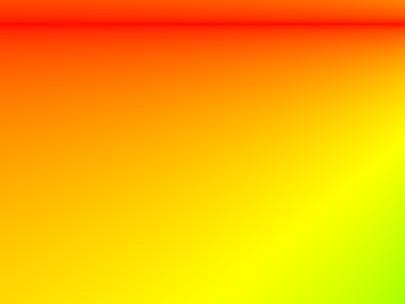
|
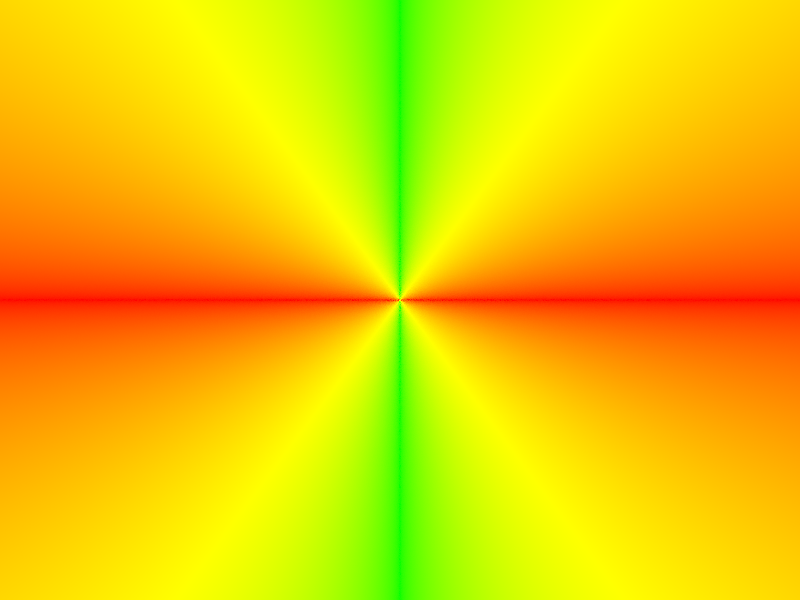
|
Triangle Intersection
Both the has_intersection and intersect function are implemented using the Möller-Trumbore algorithm (to find Barycentric coordinate):
Ray equation: O + tD = (1-u-v)P0 + uP1 + vP2 Solved using: t = (Q • E2) / (D • E1) u = (P • T) / (D • E1) v = (Q • D) / (D • E1) Where: E1 = P1-P0, E2 = P2-P0 T = O - P0 P = D × E2 Q = T × E1
check if all the coefficient u, v, (1-u-v) are between 0-1, if so, the point is within the triangle
Key differences between functions:
has_intersection: Returns true/false for hit detectionintersect: UpdatesIntersectionstruct with hit details (time, normal, material, primitive)
Some images with normal shading for small .dae files:
|
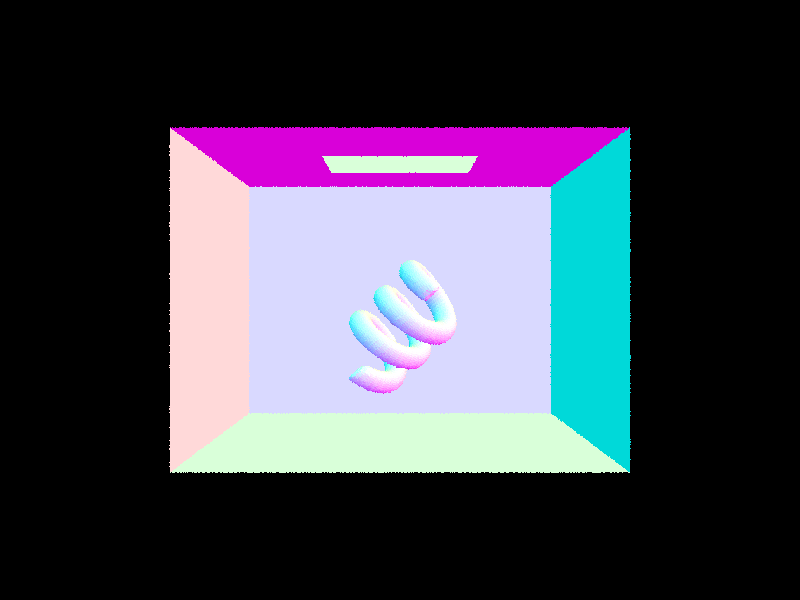
|
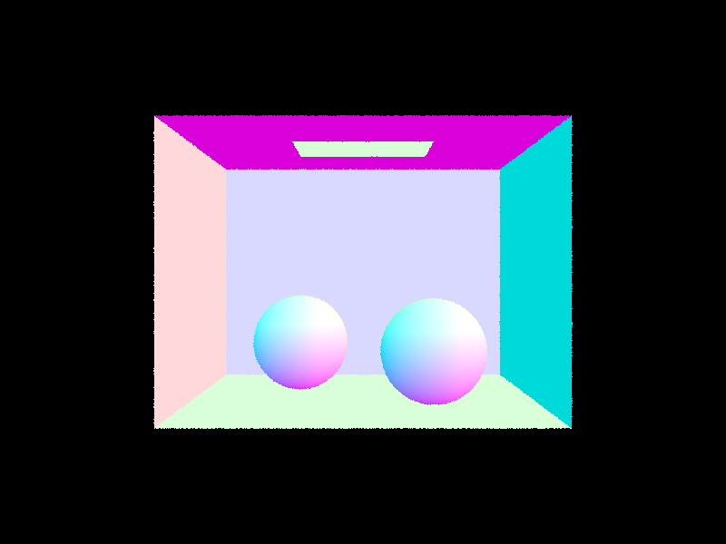
|
|
Bounding Volume Hierarchy
I implemented the BVH recursively by partitioning the primitive top down into a binary tree:
- Compute Bounding Box:
- For each node, create a bounding box (bbox)
- Expand it to enclose all primitives in range [start, end)
- Leaf Node Check:
- If number of primitives ≤ max_leaf_size (we reach the max size), then we store all primitives in node (no further splitting)
- Splitting Heuristic:
- Split on longest axis at midpoint
- To find the longest axis of the boundng box, we calculate diagonal vector using bbox.max - bbox.min, and find axis with largest span (x/y/z)
- Calculate midpoint index
- Use nth_element to partition primitives based on centroid position with midpoint in the correct position
- Construct new bvh using the construct_bvh and on each of the partitions
Intersection Functions
For the BVHAccel class, we also have the has_intersection (for early termination) and intersect (closest hit) method:
We implemnted both use recursive approach:
- If ray doesn't intersect node's bbox → return false (ray going through the empty space)
- If ray intersects bbox:
- Leaf node:
- Iterate through all primitives
- Check intersection using primitive's methods
- For intersect() function specifically:
- If local_isect occurs before current intersection
- Update current intersection (i) to local_isect
- Non-leaf node:
- Recursively check left and right children
- Leaf node:
BBox Intersection
This function is for when checking of ray intersect with the bbox, implementation uses lecture's box intersection method:
- For each axis (x/y/z):
- Calculate t_enter and t_exit using:
t_enter = (min[axis] - ray.o[axis]) / ray.d[axis]
t_exit = (max[axis] - ray.o[axis]) / ray.d[axis]
- Swap if t_enter > t_exit
- Calculate t_enter and t_exit using:
- Final t_enter = max(t_enter_x, t_enter_y, t_enter_z)
- Final t_exit = min(t_exit_x, t_exit_y, t_exit_z)
- Intersection occurs if:
- t_enter ≤ t_exit (ray spends time inside box)
- t_exit ≥ ray.min_t AND t_enter ≤ ray.max_t
- Update t0/t1 to [t_enter, t_exit] if intersection found
Some images with normal shading using BVH acceleration for large .dae files:
| 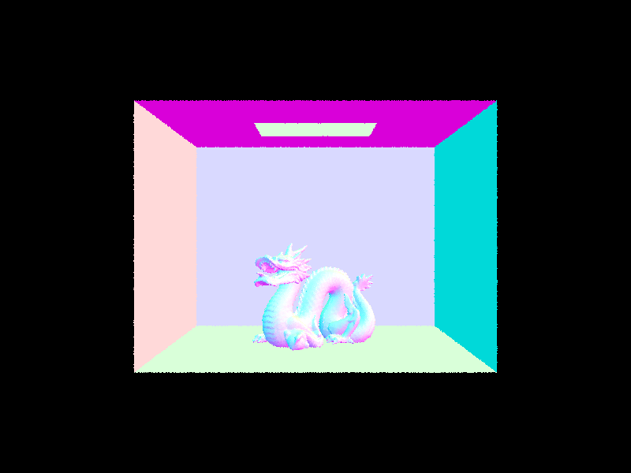 | 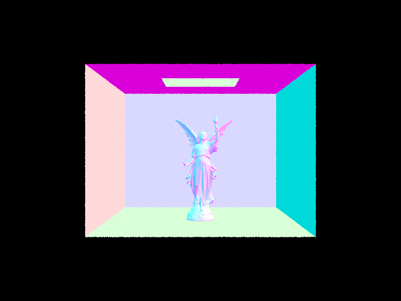 |
| 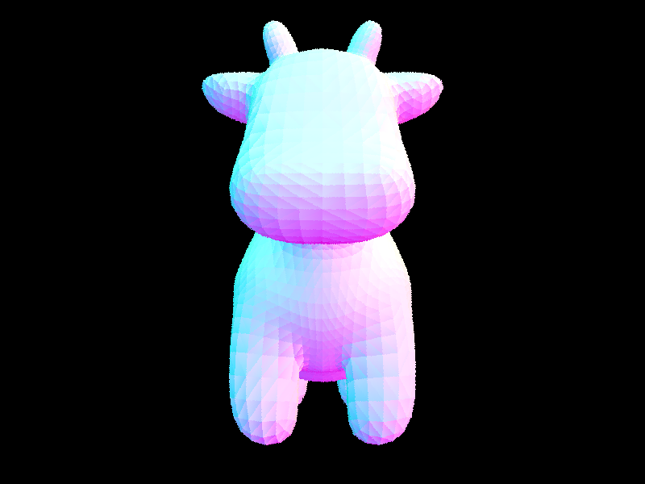 | 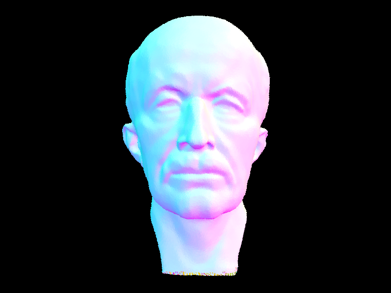 |
The BVH acceleration resulted in dramatic performance improvements across all test files, with a speedup of approximately 80 times compared to brute-force intersection testing, depending on the complexity of the scene. The cow.dae scene saw an improvement from 91.43 seconds to 1.15 seconds (79 times faster), while beetle.dae showed the most significant gain—from 116.73 seconds to 1.12 seconds (106 times faster). The teapot.dae scene was approximately 40 times faster with BVH. These results shows that BVH performs especially well in scenes with high complexity, where the optimization becomes more noticeable due to the partitioning structure effectively skipping many primitive intersection tests. Overall, the results show that BVH is highly effective in optimizing the runtime of the renderer.
Part 3: Direct Illumination
Hemisphere Sampling (estimate_direct_lighting_hemisphere)
Determine the color coming from any light source at the intersection point using uniform sampling in a hemisphere.
- Creates a local coordinate system aligned with the surface normal (
o2wmatrix) - Generates uniform samples over a hemisphere centered at the hit point
- For each sample:
- Converts from hemisphere coordinates to world coordinates:
wi_world = o2w * w_in - Casts a shadow ray toward the sampled direction:
Ray shadow_ray(hit_p, wi_world) - Uses
bvh->intersectto update the closest intersection and check for hits - If intersection exists and is a light source (
emission > 0):- Calculates incoming radiance (
L_i) from light emission - Evaluates BRDF (
f) at intersection point (how surface reflects light) - Computes cosine term (
abs_cos_theta) (light reception efficiency based on angle)
- Calculates incoming radiance (
- Converts from hemisphere coordinates to world coordinates:
- Averages results and divides by uniform PDF (
1/(2π))
Importance Sampling (estimate_direct_lighting_importance)
Samples only from light directions instead of uniform hemisphere sampling, producing less noisy and more efficient results.
- Iterates through all lights in scene:
- For non-delta lights (area lights):
- Takes
ns_area_lightsamples per light - Uses
light->sample_L()to get: Light direction (wi), Distance to light, PDF of sample - Checks visibility with shadow ray (only if ray is in desired hemisphere)
- Constructs shadow ray with:
- Origin (
hit_p + wi * 1e-4) - Direction (
wi) min_t = 1e-4(avoid self-intersection)max_t = distToLight - 1e-4(stop at light source)
- Origin (
- If no intersection before
max_t(the ray is able to reaches light and the point is not in shadow):- Computes BRDF at first intersection
- Calculates total light contribution:
L_i * f * cosine_term
- Takes
- For delta lights (point lights):
- Takes single sample (exact calculation)
- Same visibility/BRDF calculation as area lights
- Properly weights by light sample PDF
- For non-delta lights (area lights):
|
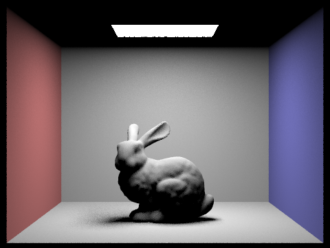
|
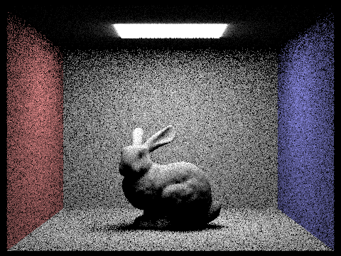
|
|
|
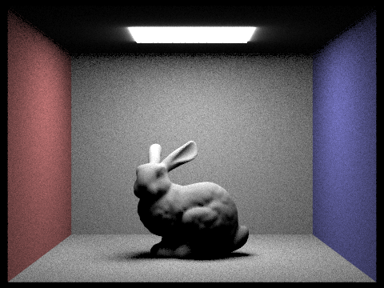
|
Same scene importance sampling at diffent numbers of light ray
|
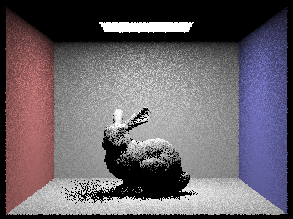
|
|
|
|
|
The importance sampling version produces significantly less noise when using the same number of samples. Hemisphere sampling tends to produce noisier images since many of the samples miss the light entirely, while importance sampling ensures every sample makes a meaningful contribution to the final result (L_out). In the CBbunny example, while the noise for hemisphere sampling is uniformly distributed, the noise for importance sampling is mostly concentrated in the shadow areas. This occurs because importance sampling focuses samples on light sources, making well-lit regions converge faster while shadow regions remain noisier. Hence, importance sampling is generally better and more efficient for direct lighting calculations.
Part 4: Global Illumination
BSDF Sampling
The bsdf->get_sample() function:
- Randomly picks a "likely" light direction based on the density function
- Computes its PDF (probability density function)
- For diffuse objects,
f(wi, wo)always returns a constant:albedo/π - This is because diffuse objects reflect the same amount of light regardless of angles
Global Illumination Implementation
Global illumination simulates how light bounces multiple times between surfaces to produce realistic indirect lighting. Implementation is similar to one-bounce but with recursion:
-
Initial setup (
hit_p,w_outetc.) is the same. However we do setL_outtoone_bounce_radiance(direct lighting contribution) at current intersection -
Track ray depth using
r.depthvariable and terminate recursion if ray exceedsmax_ray_depth -
Otherwise, call
isect.bsdf->sample_f()to get possible light direction from diffuse BSDF -
Generate a ray
next_rayfrom current intersection with the sampled direction, and increment ray depth by 1
Russian Roulette Termination
Added because max_ray_depth alone doesn't yield realistic models:
- The rule is: always trace at least one indirect bounce when enabled
- Then use 30% termination probability for subsequent bounces
- Enter recursion only if either:
- This is the first bounce, OR We hit the 70% probability to continue
Recursive Call
Call at_least_one_bounce_radiance to:
- Find light contribution from
next_ray - Weight the contribution appropriately
Result Accumulation
Two modes:
- If
isAccumBouncesis true: accumulate all bounces - Otherwise: isolate specific bounce level (mostly for debugging)
|
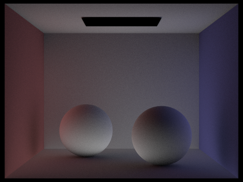
|
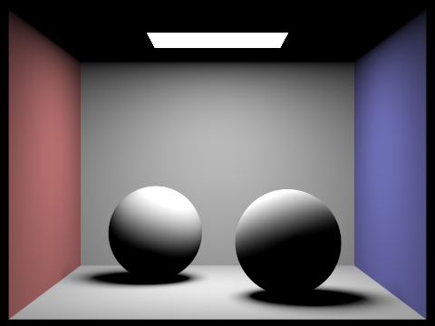
|
|
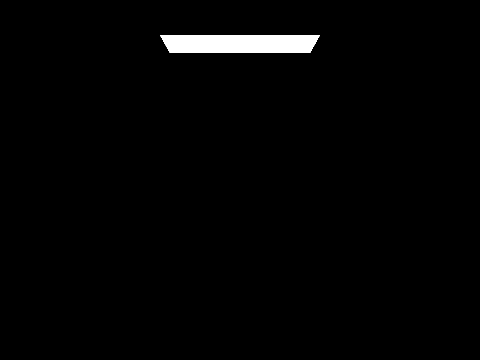
|
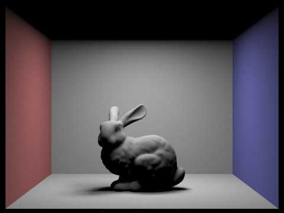
|
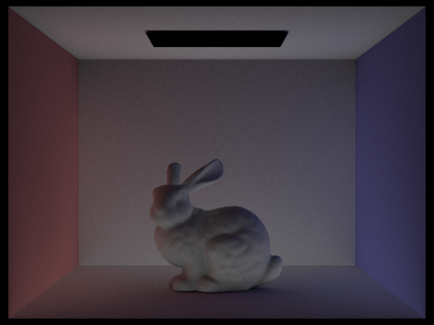
|
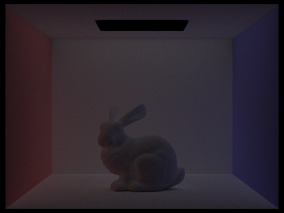
|
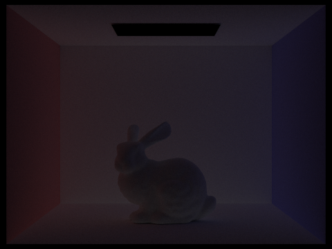
|
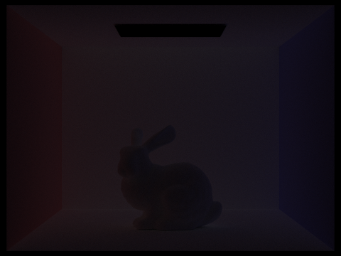
|
|
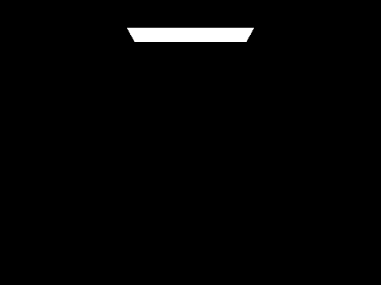
|
|
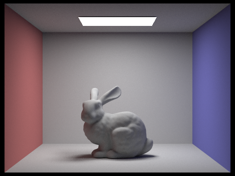
|
|
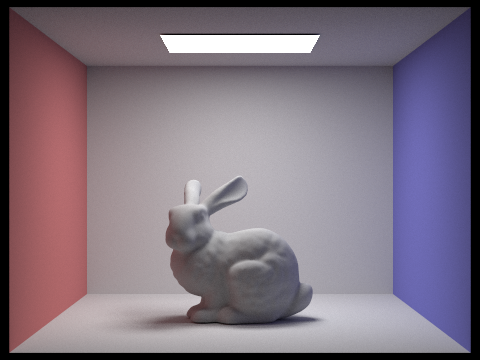
|
|
When isAccumBounces is enabled, the rendered photo accumulates light contributions from all previous bounces, which brightening the scene (especially in shadowed), which results in a more physically accurate, globally illuminated image. As max_ray_depth increases, each additional bounce refines indirect lighting: lower depths (1–2) captures soft shadows and color bleeding, while higher depths (3–5) subtly brighten the object. Without accumulation (isAccumBounces=false), each bounce is isolated, revealing how indirect light are adding up.
|
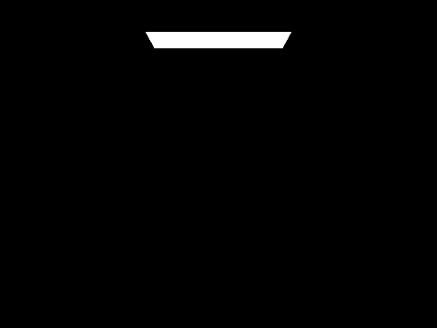
|
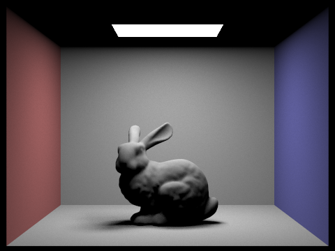
|

|

|
|
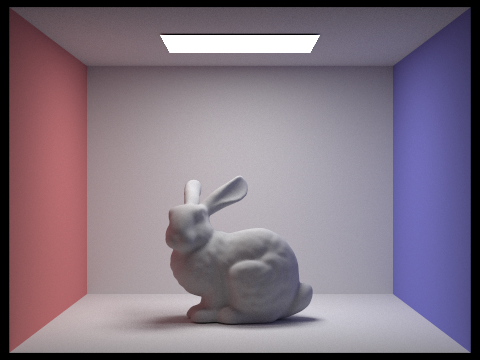
|
|
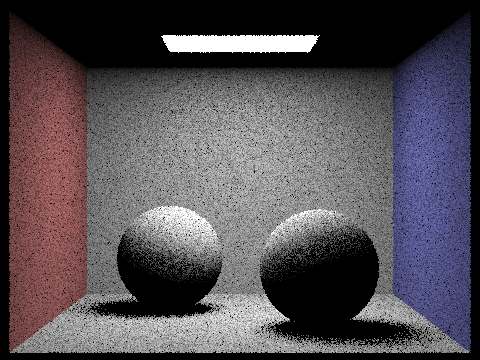
|
|
|
|
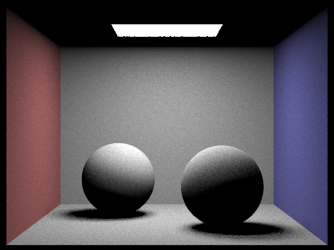
|

|
|
Part 5: Adaptive Sampling
Traditional fixed-rate sampling applies the same number of samples to every pixel, which is inefficient because:
- Simple Areas: Pixels in uniform regions (like flat walls) converge quickly with few samples
- Complex Areas: Pixels in regions with complex lighting (shadows, reflections) require many more samples to reduce noise
Adaptive sampling solves this inefficiency by dynamically adjusting sample counts per pixel using statistical analysis.
Convergence Monitoring
s₁: Cumulative sum of all sample illuminance valuess₂: Cumulative sum of squared illuminance values- These running totals enable efficient variance calculation without storing individual samples
- Uses the Central Limit Theorem with a 95% confidence interval to estimate stability
Batch Processing Workflow
Per-Pixel Sampling
- Take samples up to maximum limit
- Check convergence only every
samplesPerBatchand early termination when convergence detected
Convergence Check
- Compute statistics every batch:
- Mean illuminance: μ = s₁/n
- Variance: σ² = (s₂ - (s₁²/n))/(n-1)
- Stop when confidence interval (CI = 1.96√(σ²/n)) < 5% of mean
Tracking Adjustments
- Record actual samples used (s) in
sampleCountBuffer - Final pixel color = ∑(sample_colors)/s
|
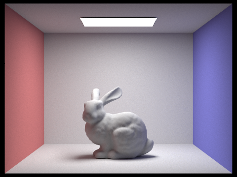
|
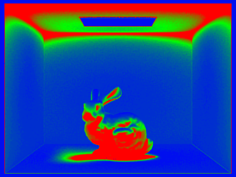
|
|
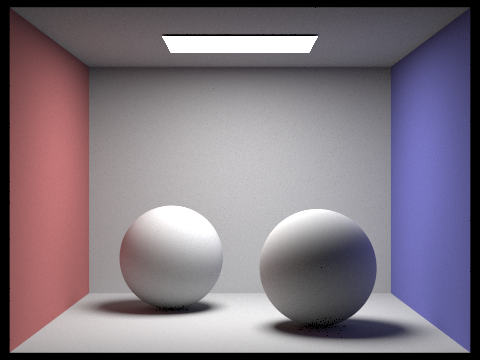
|
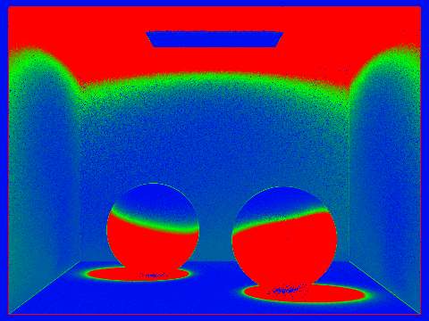
|